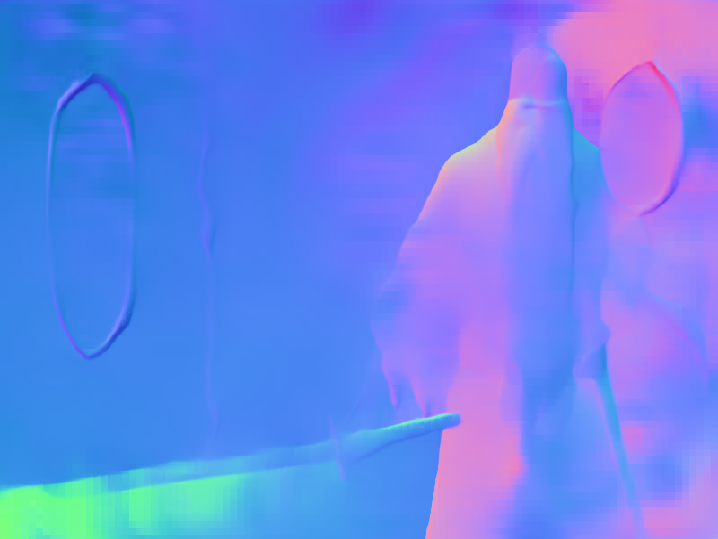

Line Detection Visualizations
Original Image
Manga Line Extraction
Inverted B/W Lines
Line Detection (SOLD2)
Curve Detection (Canny)
Depth/Normals (DSINE)
Not Generated
Not Generated
Not Generated
Not Generated
